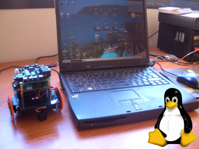
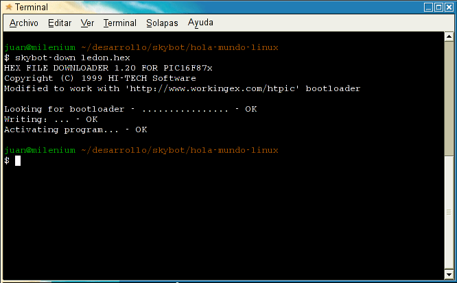

|
Taller de Robótica UCA 2005. SESION 3. “Hola mundo” en Linux |
|
 |
En este capitulo editaremos, compilaremos y cargaremos en el robot el programa mas sencillo posible: el famoso “hola mundo”. Cuando programamos un ordenador, el programa “hola mundo” es el programa más sencillo que imprime por pantalla la frase “Hola mundo!”.
En nuestro caso, vamos a programar un microcontrolador, que no tiene pantalla. Tampoco tiene teclado. Pero tiene otros periféricos, como por ejemplo un led. El programa “hola mundo” lo único que hará será enceder el led de la Skypic. Es la manera en la que el micro nos dirá: “Estoy vivo y he ejecutado tu programa”.
En este ejemplo no vamos a mover el robot. Desconectar el cable que unen las tarjetas skypic y ct293. Sólo trabajaremos con el “cerebro”.
Nos centraremos en que el programa hola mundo funcione en nuestro robot. En los siguiente capítulos veremos cómo funciona.
|
|
¡Manos a la obra! Vamos a cacharrear. Primero nos decargarmos el programa “hola mundo”.
Bajar el paquete hola-mundo-linux.tgz.
Descomprimirlo, entrar en el directorio y ver los ficheros que hay:
|
$ tar vzxf hola-mundo-linux.tgz $ cd hola-mundo-linux $ ls ledon.c Makefile pic16f877.h skybot-hola-mundo.prj |
Se proporciona el fichero Makefile para poder compilar facilmente. Sólo hay que ejecutar make.
Editar el fichero ledon.c. Como ya comentamos, se puede usar cualquier editor. Nosotros proponemos el anjuta.
Lanzar el anjuta y darle a la opción Archivo/Abrir proyecto y seleccionar skybot-hola-mundo.prj.
En la zona de la derecha tenemos acceso a todos los archivos del proyecto. Desplegar la carpeta que pone source y pinchar en ledon.c. Este es nuestro programa hola mundo en c. Se nos abrirá en el editor de la derecha.
Aquí puedes ver un pantallazo del anjuta 1.2.2 en acción!
Para compilarlo bien ponemos salir a una consola y ejecutar make (desde el directorio donde está el programa) o bien desde el anjuta podemos darle a la tecla F11 (o ir a la opción de menú Construir/Construir)
Ya tenemos el programa compilado. Vamos a descargarlo en la skypic.
Conectar el robot al puerto serie del PC
Alimentarlo
|
|
Abrir una consola e ir al directorio donde se encuentre el programa ejecutable ledon.hex
Ejecutar el cargador:
|
$ skybot-down ledon.hex |
Al arrancar se mostrarán unos “puntitos” que se van imprimirndo. Está esperando a que se pulse el reset del robot.
Apretar el botón de reset y el ledon.hex se cargará. ¡Ahora el led está encendido!. Si quitamos la alimentación y la volvemos a poner, es decir, reiniciamos a nuestro micro, se volverá a ejecutar el último programa cargado. Los programas se graban en la memoria flash, que es no volátil.
|
 |
¡¡Ya hemos programado el robot!!

{kind=link}